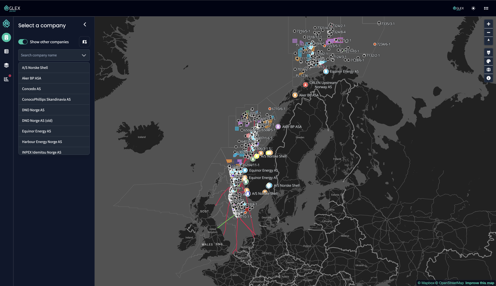
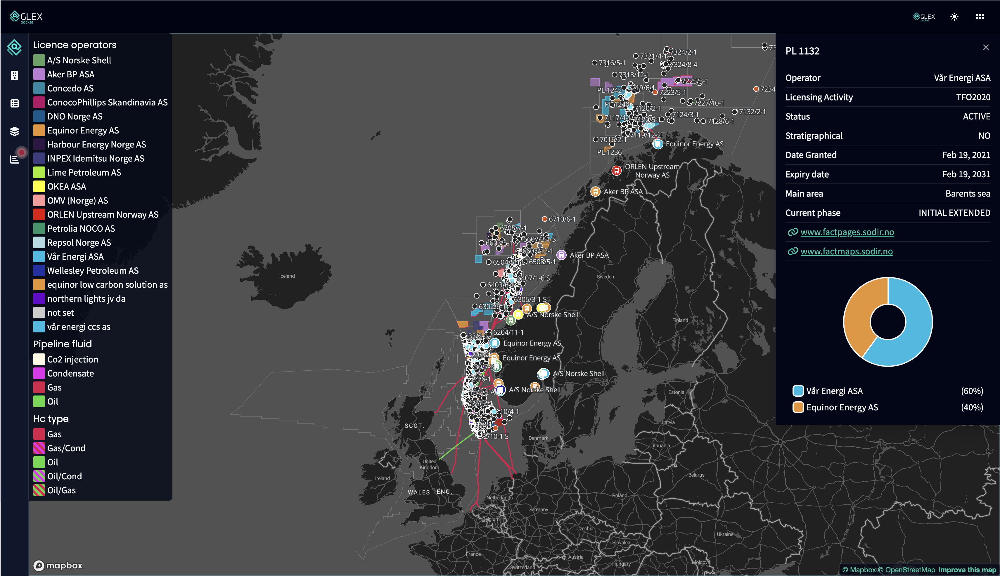

Kontekst
Markedsscreening i energibransjen
Portfolio Map er en tilgangsstyrt kartmodul i en B2B-plattform, bygget med SvelteKit og Mapbox GL. Modulen samler lisenser, felt, funn, brønner, pipelines og selskapsdata i ett felles arbeidsflate.
Målgruppen er domeneeksperter som jobber raskt. De trenger å filtrere på selskaper, forstå eierskap og gå fra oversikt til beslutning uten å bytte verktøy.

Overordnet visning med selskapssøk og kartlag for rask screening i norsk sokkel.
Problem
Komplekse geodata skal gi rask innsikt
Kartdata er komplekse. Lisenser, felt, brønner, spesialiserte lisenser og produksjonsdata måtte vises samtidig, uten å skape tolkningsarbeid.
"Det mest krevende var ikke hva som skulle vises, men hva som skulle skjules."
Løsningen måtte også støtte rask sammenligning av flere selskaper side om side. Det stilte høye krav til visuell prioritering og filterarkitektur.
Innsikt
Kartet er scenen, sidepanelet gir beslutningsgrunnlaget
Kartflaten gir oversikt, men beslutningen tas i panelet. Der må data være lesbar, sammenlignbar og handlingsrettet med en gang.
Derfor ble hovedgrepet en flyt som starter bredt og snevrer inn raskt gjennom filter, valg i kartet og direkte detaljvisning.
Løsning
Ett klikk fra oversikt til detalj
Løsningen ble en modul der brukeren kan gå fra bred porteføljeoversikt til konkret lisensvurdering i ett sammenhengende grensesnitt. Selskapsfiltre, kartlag og metadata arbeider sammen i samme flyt.
Når et objekt velges, åpnes detaljpanel med nøkkeltall og eierskapsfordeling, mens kartet beholdes aktivt i bakgrunnen. Det gir raskere beslutningsstøtte enn å hoppe mellom separate visninger.

Ferdig løsning: kart, selskapsoversikt og detaljpanel med eierfordeling i samme arbeidsflate.
Refleksjon
Å prioritere for eksperter er ikke enkelt
Å designe for domeneeksperter er noe annet enn å designe for et bredt publikum. De vet hva de ser etter, jobber raskt og har lav toleranse for friksjon. Utfordringen ligger ikke i å redusere kompleksitet, men i å prioritere riktig informasjon til riktig tid.
Jeg lærte at forenkling ikke handler om å fjerne, men om å strukturere det komplekse slik at det blir tilgjengelig og forståelig. Det krever at man forstår hvordan brukeren faktisk jobber, ikke bare hvordan noe ser ut.


.png)